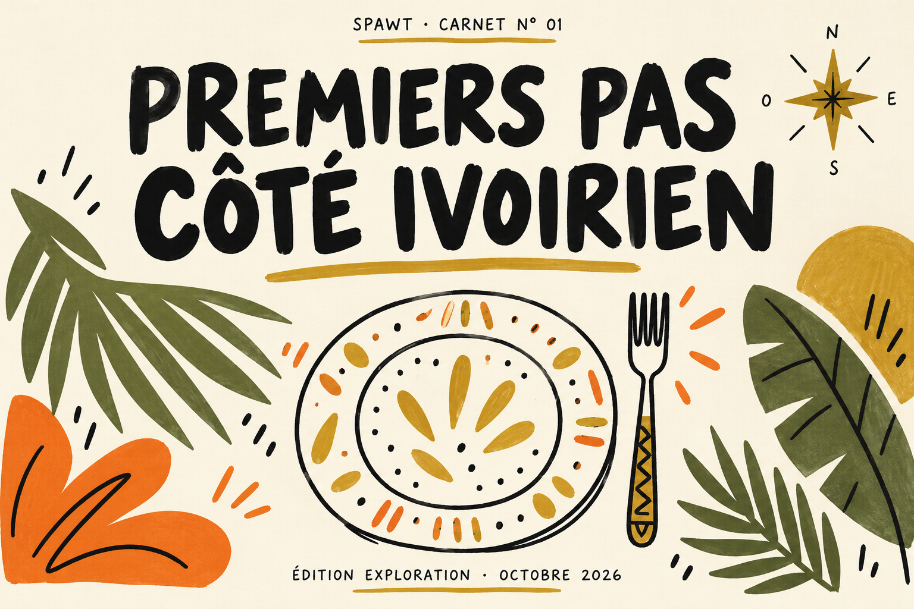
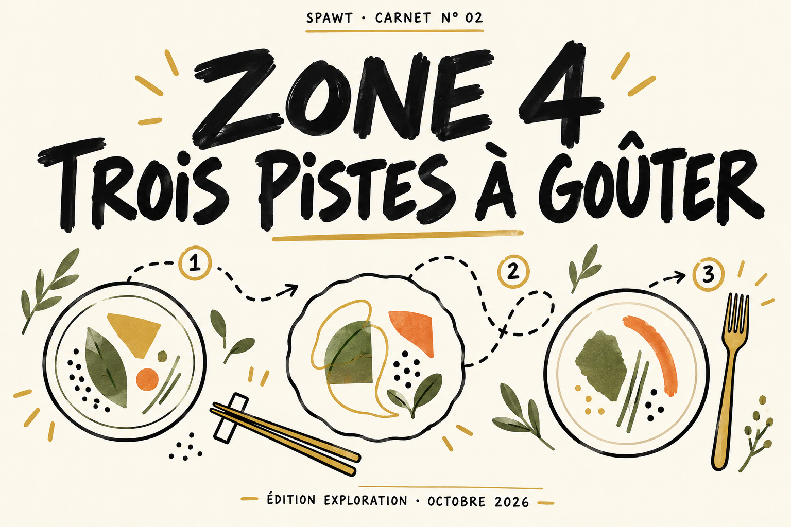
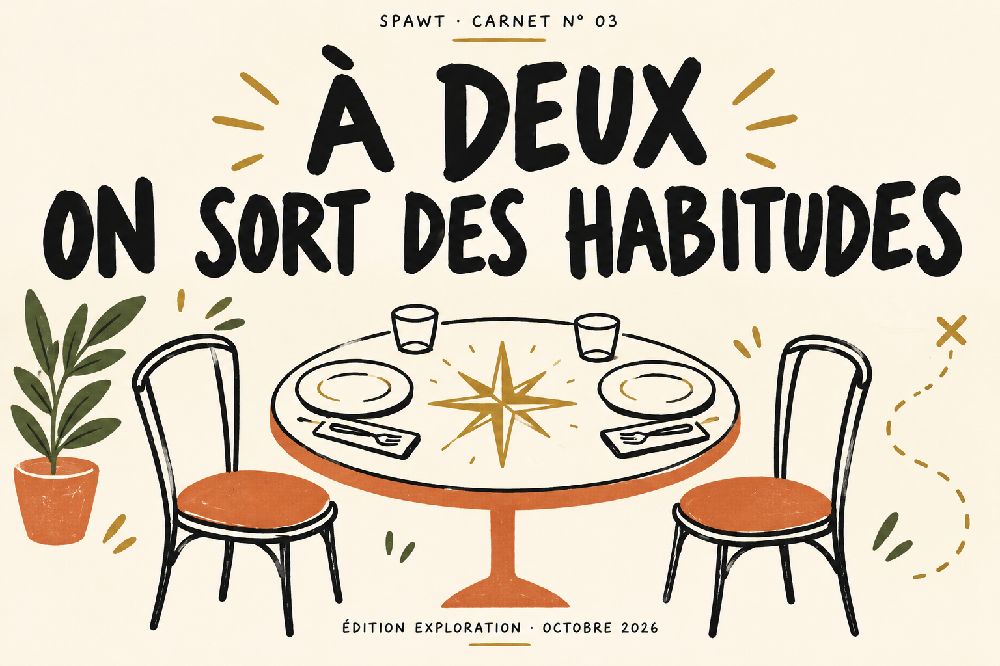

SPAWT · Première éditionSPAWT · Les carnets d’explorationUne ville. Plusieurs premières fois.
Choisir une piste, sortir, puis raconter ce que l’on a vraiment découvert.
Contenu éditorial préparé · Publication dans l’app en attente d’accès serveur. Couvertures illustrées, aucun lieu réel représenté.

Premiers pas côté ivoirien
Édition exploration · Deux premières pistes pour ouvrir son carnet ivoirien, une sortie à la fois. Couverture illustrée.
- La Grande République
Première piste : La Grande République, à Riviera Bonoumin. Sa fiche SPAWT indique une cuisine ivoirienne. Avant de partir, choisissez le plat que vous voulez découvrir et faites confirmer sa disponibilité.
- Le Paon
Le Paon, à Riviera 3, réunit les catégories française et ivoirienne dans SPAWT. Une piste pour comparer vos envies et demander quelles spécialités ivoiriennes sont proposées le jour de votre passage.
Pourquoi ces adresses ?
Cuisine ivoirienne déclarée dans la fiche SPAWT ; point de départ de découverte, sans visite revendiquée.
Croisement des cuisines déclarées, sans supposer une spécialité précise.

Zone 4 · Trois pistes à goûter
Édition exploration · Trois adresses, trois envies à comparer en Zone 4. Couverture illustrée ; pas un itinéraire.
- Kaiten
Piste japonaise : Kaiten, rue du Dr Blanchard. Son menu en ligne propose sushi, sashimi et gyozas. Le déjeuner est affiché à 20 000 ou 22 000 FCFA selon la formule : vérifiez la carte avant de choisir.
- Sam's
Piste burgers : Sam’s. Sa fiche SPAWT le situe en Zone 4 et le classe en burger/pizza et fusion. Votre mission : repérer une proposition qui vous intrigue et vérifier son prix avant de vous déplacer.
- L'Impasse
Piste camerounaise : L’Impasse, ex-Ô Feu de Bois. Tripinafrica y signale ndolé et poulet DG. Demandez la carte du jour avant de choisir, puis gardez votre découverte pour la prochaine sortie de la Bande.
Pourquoi ces adresses ?
Menu et adresse du site officiel kaiten.ci vérifiés le 17 octobre 2026.
Quartier et cuisines SPAWT ; aucune spécialité ajoutée sans source.
Conflit cuisine détecté : SPAWT ivoirienne contre présentation camerounaise Tripinafrica ; aucun changement silencieux de la fiche.

À deux · On sort des habitudes
Édition exploration · Deux pistes, une décision à deux : comparer les envies et le budget avant de réserver. Couverture illustrée.
- Kaiten
À deux chez Kaiten : le menu affiche des gyozas par six à 9 000 FCFA dans les apéritifs à partager. Choisissez ensemble la suite du repas et votre budget total. Une piste de partage, sans promesse d’ambiance romantique.
- Madame Antika
Madame Antika pour une découverte à deux : l’établissement se présente comme afro-latino. Chacun choisit une saveur qu’il veut explorer ; comparez vos envies avant de réserver. Menu, budget et disponibilité restent à confirmer.
Pourquoi ces adresses ?
Critère duo explicite : portion à partager documentée sur le menu officiel ; prix de portion, pas repas pour deux.
Positionnement afro-latino recoupé Tripadvisor et Tripinafrica ; proposition éditoriale à tester, pas certification duo.